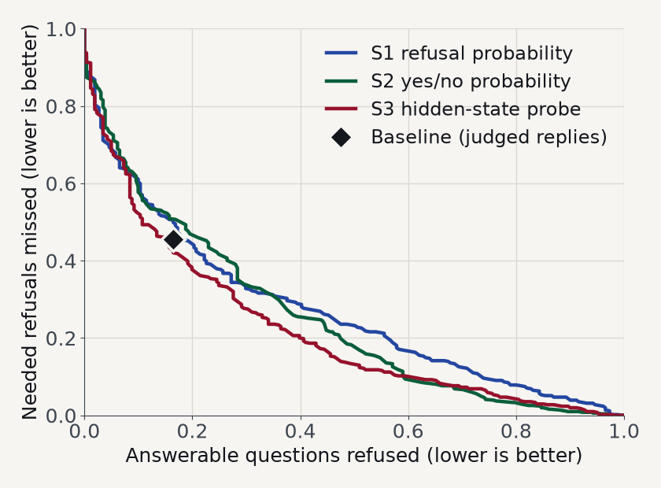

Can a small language model's inner signal tell it when to refuse? A reproduction and two extensions.
30 seconds. Say who you are and give the whole story in three sentences, so the room knows where it is going.
"I reproduced a benchmark paper on free resources. I tested two ideas to help a small model refuse correctly. The first failed completely. The second finds a real signal inside the model, but it does not clearly beat the baseline. I will show the numbers and say exactly what they do and do not prove."
Do not read the title. If you are behind, this is the only slide you can shorten.
Muhamed, Ribeiro, Dreyer, Smith, Diab · Carnegie Mellon and Amazon · EACL 2026 · arXiv 2510.10390
Q: When did the East India Company take control of India?
Passage: The East India Company gained a foothold in India in 1611.
Answer: 1611
Q: When did the company take control of India?
Passage adds: The Dutch East India Company established posts in India.
Correct reply: REFUSE_AMBIGUOUS_QUERY
1.5 minutes. Answers the doctor's question "what is this paper and what problem does it solve".
Say: a retrieval system can find the right passage and still fail, because the passage is unclear or wrong. The safe behavior is to refuse, and to say why. The example is from Figure 1 of the paper: one small change to the question and passage turns an answerable question into one the model must refuse.
Likely question: "Is this peer reviewed?" Yes, EACL 2026 long paper, pages 6811 to 6856, and the arXiv preprint is 2510.10390.
If behind: skip the card details and go straight to the two boxes on the right.
Six failure types: ambiguity, contradiction, missing information, false premise, wrong level of detail, opinion asked.
Our model, Qwen1.5-7B-Chat: answer accuracy 56.1%, refusal accuracy about 5%.
1.75 minutes. This is the paper's solution. Walk the four steps left to right and stop on step 4.
Key idea to say in your own words: the benchmark is generated, not collected. Models change the passage on purpose, so every example has a known correct reply. That is why we can score refusals without guessing.
Likely question: "What is the difference between detecting and categorizing?" Detecting = should I refuse at all. Categorizing = which of the six reasons. The paper says models are better at the first than the second. Our extensions mostly target the first.
Numbers are from the paper itself (73.0% and 47.4% from the introduction, Figure 5; 56.1% for Qwen 7B from the scaling section). Refusal accuracy for Qwen 7B is read from a small plot, so say "about".
If behind: drop the six failure types line; it is on the report.
| Metric | Paper | Ours |
|---|---|---|
| Answer accuracy | 0.561 | 0.690 |
| Refusal accuracy (exact reason) | about 0.05 | 0.114 |
| Answerable questions refused | not given | 0.165 |
| Needed refusals missed | not given | 0.456 |
Same finding as the paper: a 7B model almost never names the right reason.
1,560 of 1,600 replies generated (40 ran out of GPU memory). 770 graded so far. Cost: $0.
2 minutes. This is the "code and reproduction" line of the rubric (25 points). Be exact.
Say: my numbers are higher than the paper's, but they are not comparable one to one, because the judge, the 4-bit model and the software are different. What matches is the story: refusal accuracy near the floor.
Likely question: "Why is your answer accuracy higher?" A different judge (Gemini, not Claude), a quantized model and a different inference stack. I list these as deviations in the report. I do not claim my number beats the paper.
Likely question: "Is the baseline complete?" No. 770 of 1,560 replies are graded because of the free judge quota (500 requests a day). The graded half was chosen by a seeded random shuffle, and the comparison script checks it is representative. A full run needs the rest graded.
Likely question: "How do you know Gemini grades like Claude?" I do not yet. The 30-reply hand check is the planned validation and is listed as a limit.
"Refused" here includes any refusal code the judge returns. Two mistyped codes were mapped to the closest valid code.
EVIDENCE_STATE first, then answer.We report the result. We did not test why it happens.
| Baseline | Control | Diagnose first | |
|---|---|---|---|
| Refusals caught (%) | 43.3 | 35.8 | 1.9 |
| Right reason (%) | 6.8 | 3.3 | 0.0 |
95% of the time the model wrote CLEAR (762 of 800), even when it had to refuse.
1.75 minutes. Give the failure its full time: a clean negative result is worth marks under "result quality" and "honesty".
Say: this was my first idea, and I thought it would help. Once the model writes "CLEAR" it just answers. The control shows it is not a formatting problem: the control is also a little worse than the baseline, but nothing like this.
Numbers: 776 examples common to all three runs, clean refusal codes only. The baseline and control figures are lower bounds because free text refusals are not counted (no judge was used here). The gap to the diagnose-first run is still huge: 1.9% against 43.3%.
Likely question: "Why did it fail?" I do not know. "Anchoring on clear" is a description, not an explanation. I tested nothing about the mechanism.
This failure is the reason for Extension 2: if the model cannot be trusted to write the answer to "is the evidence clear", read what is inside it instead.
The chance that the reply starts with a refusal code. No text is generated.
Ask a yes or no question. Compare the chance of "No" with the chance of "Yes".
A small classifier trained on the model's hidden state, its inner numbers.
2 minutes. Rubric: code and reproduction, and motivation.
Say: three ways to read the same model. S1 and S2 are probabilities, S3 uses a small trained classifier. A probe is just a simple classifier that looks at the model's internal numbers. Higher score always means "refuse".
Why 5 folds over source questions? The 1,600 examples are variants of only 100 questions. A random split would put variants of the same question in training and test, and the result would look better than it is. So an example's own question is never used to tune its threshold or train its probe. A unit test checks it.
Intervals: resampling whole source questions, 2,000 times, seed 0. Honest limit: the fitting is not repeated inside each resample.
Likely question: "Is the probe cheating? It sees the labels." It is trained with the benchmark's labels and the baseline is not, so I call it a diagnostic of what the hidden state contains, not an equal comparison.
Success rule fixed before the run: signal if the lower end of S1's AUROC interval is above 0.5; gain if the tuned threshold beats the default with its interval above 0.
| Readout | Signal | Decision | Vs baseline |
|---|---|---|---|
| Baseline | none | 0.690 | reference |
| S1 | 0.726 | 0.658 | slightly worse |
| S2 | 0.751 | 0.669 | unclear |
| S3 probe | 0.797 | 0.718 | unclear |
Signal = AUROC (0.5 coin flip, 1.0 perfect). Decision = balanced accuracy (0.5 chance). Probe gain: +0.028, interval includes 0.
770 of 1,560 graded · judge unchecked · one seed

2.25 minutes. This is the "result quality" line of the rubric (25 points). Read the verdict out loud and do not oversell.
Say: the first column says the signal is real, all three are well above 0.5. The last column is what a deployed rule would do. A threshold on S1 or S2 does not beat just letting the model answer. The probe has the best number, +0.028 balanced accuracy, but its interval is -0.014 to +0.065, which includes zero, so I cannot claim an improvement.
The picture: lower left is better. The diamond is the baseline. It sits near the S1 and S2 curves and just above the probe's, so the model's own free text decisions already use about as much of the signal as a global threshold can.
Per class (all rules on the same 770 examples): the probe and S2 cut missed contradictions from 0.71 to 0.19 and 0.23, but refuse more answerable questions (0.17 to 0.29 and 0.50). So the overall number hides a trade-off.
Hostile question: "Your baseline depends on an unvalidated Gemini judge for 64% of replies, while your rules are scored against labels. Why trust the comparison?" Answer: treat it as provisional. I compare on the same 770 examples with source clustered intervals, I claim no winner, and the two outstanding steps are grading all 1,560 replies and the 30 reply hand check.
What a full run needs: all 1,560 graded (about two more short runs on the free quota), the judge check, more seeds and models. Cost stays near $0.
No time budget. Leave this up during questions. The full list of 20 references is in the IEEE format report. Related follow-up work on the same topic: Yin et al. (recognizing unanswerable questions), R-Tuning (training a model to say it does not know) and Self-RAG (a model that critiques its own retrieval). All three change the model by fine-tuning; our extension keeps the weights fixed and reads signals it already produces.